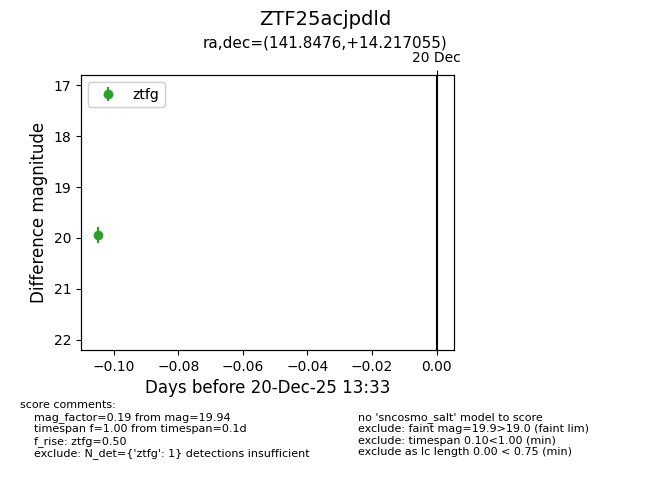
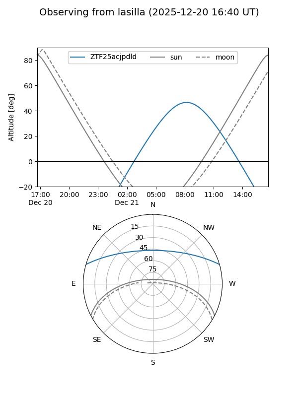

ZTF25acjpdld
Target ZTF25acjpdld at 2025-12-20 13:34
Aliases and brokers:
FINK: fink-portal.org/ZTF25acjpdld
Lasair: lasair-ztf.lsst.ac.uk/objects/ZTF25acjpdld
ALeRCE: alerce.online/object/ZTF25acjpdld
alt names
ZTF25acjpdld (ztf,fink_ztf)
Coordinates:
equatorial (ra, dec) = 141.8476,+14.21706
equatorial (HMS+DMS) = 09:27:23.43,+14:13:01.40
galactic (l, b) = (217.4488,+40.90315)
Flags:
Photometry:
last ztfg=19.94
1 ztfg detections
Lightcurve

Visibility


Additional plots